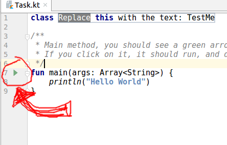
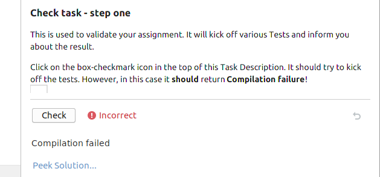
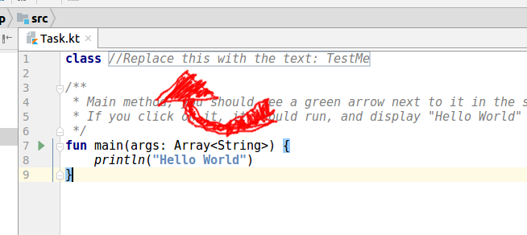

First, let's make sure the setup of your environment is ok.
This method is sometimes added so you can play around with the assignment without having to rely on test output.
Try to execute the main method by pressing on the green arrow to its left.

There can be various reasons why the green arrow is not showing:
This is used to validate your assignment. It will kick off various Tests and inform you about the result.
Click on the box-checkmark icon in the top of this Task Description. It
should try to kick off the tests.
However, in this case it should return Compilation failure!

Some assignments have placeholders, which indicate what to fill in where in the task.
To make the currentcheck work, you have to fill in the placeholder in the task.
Type "TestMe" (without the quotes) in the placeholder, and run the 'check task' again.

When running "check task", it should now report Congratulations!.
This means the placeholder was filled in correctly.